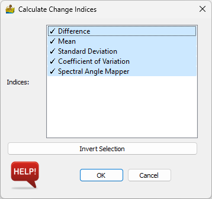
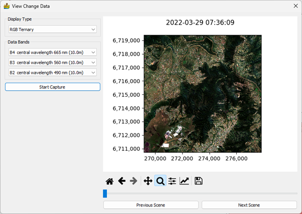

Change Detection¶
Change detection is an important technique used in the analysis of remote sensing data. Ordinarily, satellite data has a fixed number of bands (between 4 and 12 on average). These bands represent a light spectrum and can be utilised to study various terrestrial phenomena, from vegetation to minerals. The limits of the data are normally due to the number of bands in the data. One way to overcome this is to examine the temporal dimensions of the data. By studying the change in the data across multiple scenes, we can leverage more information.
Change detection relies on the changing nature of the earth. This can be from extreme environmental disasters such as fires and landslides, or as simple as studying the effect a seasonal change has on the target being studied.
This includes: 1) Landslides. 2) Environmental studies. 3) Land use and land cover. 4) Mineral outcrop (by using change detection as a process of elimination).
Calculate Change Indices¶
Change Detection Indices give a measure of change in an area. The input to this module is a list of datasets loaded using the batch importer. Each dataset must also have an associated date. The import tool for satellite scenes should assign a date automatically, but should a manual date need to be assigned, this can be done within the metadata context menu. A variety of change indices can be calculated:
Indices:
Difference - calculates the difference between two dates.
Mean - average pixel value image over all dates.
Standard Deviation - shows pixel variation though standard deviation.
Coefficient of Variation - measure of variation, taking mean into account.
Spectral Angle Mapper - find spectral angle between two scenes.

View Change Data¶
The visualisation of change is an obvious need for change detection. Often an end user wishes to see the scenes in sequence, rather than an index. As such a viewer is needed for this. The viewer requires only a batch list, coupled with associated dates for each scene. The viewer loads in the scene at a reduced resolution, suitable for a windows display. This increases speed, with the relevant section of the scene being reloaded upon zooming in. Because this viewer is dependent on reading constantly off a disk, slow image data formats are not supported. To optimise this, the viewer requires the data to be in GeoTIFF format. The main display also shows the date and time stamp for the scene.
The viewer options are:
Display type: sets the image to be displayed, whether single band or ternary.
Data bands: used to set each band to be displayed.
Start capture: The scenes can be exported to a GIF image, at the current resolution and zoom.
Previous and Next buttons: used to select the scene to be displayed.
Scroll bar – used to select the scene to be displayed.

References¶
Cole, P., Coetzee, H., 2022, Innovative use of change detection in large numbers of satellite scenes, with geological applications, Quarterly Journal of Engineering Geology and Hydrogeology